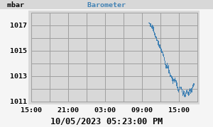

Barometer
24h Barometer

Today's min: 1011.4 mbar at 03:47:53 PM
Today's max: 1017.2 mbar at 10:08:55 AM
7-day Barometer
This week's min: 1011.4 mbar at 03:47:53 PM (Thursday)
This week's max: 1053.2 mbar at 11:13:09 PM (Monday)
WeeWX v4.10.2